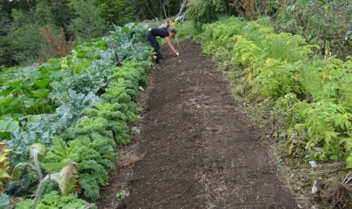
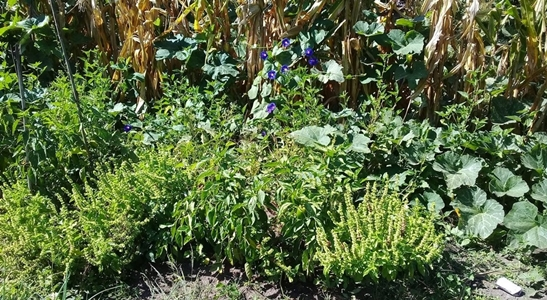

¿Qué es la Agroecología?
Agricultura AGROECOLOGICA es un sistema de producción agrario que nos proporciona alimentos sin residuos de agroquímicos, que respeta los ciclos de la naturaleza y los conserva frescos, sabrosos y nutritivos. Los alimentos agroecológicos garantizan la mejor calidad, y están sujetos a procesos de fabricación, elaboración y transporte (trazabilidad), desde el campo hasta la mesa. Una dieta saludable, compuesta por alimentos frescos y de temporada, aportan diferentes nutrientes (proteínas, vitaminas, minerales, hidratos de carbono, antioxidantes, etc.), que ayudan a mejorar nuestra salud. Cada vez que adquirimos estos productos, cuidamos el medio ambiente, se reduce la huella de carbono ecológica, preserva los ecosistemas, favorece la biodiversidad, asegurando un futuro sostenible para las siguientes generaciones. Así mismo, la Huella de Carbono Ecológica, es un indicador medioambiental que permite medir y evaluar el impacto de nuestras acciones o de cualquier forma de vida, sobre la capacidad que tiene el planeta de renovar los recursos naturales al servicio de la humanidad. Cabe destacar, que la producción agroecológica colabora en el desarrollo de nuestra comunidad, con beneficios socioeconómicos y culturales, en sistemas de la economía social y los agricultores familiares de diversas nacionalidades.
¿Qué es Permacultura?

Permacultura es un sistema de diseño fundado en la ética y principios que se pueden usar para establecer,
diseñar, coordinar y mejorar todos los esfuerzos hechos por individuos, hogares y comunidades que trabajan para
un futuro sostenible.
Descripta como una disciplina dedicada al diseño ecológico de áreas productivas capaces de sustentar a familias,
comunidades e incluso regiones de un modo integral, reciclando nutrientes, residuos, y aprovechando la energía
al máximo de bajo consumo.
Como ciencia la Permacultura estudia las relaciones y patrones que operan en la naturaleza.
Los autores del sistema de diseño Permacultura son Bill Mollison y David Holmgren que a mediados de los setentas lo que pretendían era aplicar el diseño a los sistemas agrícolas que resultaban ser muy ineficientes. Su enfoque es el rediseño y la integración de nuestros estilos de vida, nuestra subsistencia y uso del suelo, en sintonía con las realidades ecoenergéticas de hoy en día.
Sus principios son:
La ecología incluye a la humanidad.Trabajar con la naturaleza, en vez de contra ella.
Dejar en condiciones mejores todo lo que tocamos.
Convertir problemas en oportunidades...deshechos en recursos.
Todas las situaciones necesitan tratamientos diferentes.
La naturaleza requiere una recompensa por cada regalo.
Saber cuando tenga suficiente.
Cooperación en vez de competencia.
Todo funciona en ambas direcciones...cada ventaja tiene una desventaja, cada problema puede ser un recurso.Mejor observar, pensar e investigar que trabajar sin necesidad